orientation functor construction
1. Definition
Let  be a manifold,
be a manifold,  an abelian group and
an abelian group and
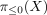
the fundamental groupoid Then for a path choose a subdivison of the intervall
choose a subdivison of the intervall 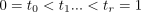
such that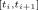
is contained in a single chart (cf. open covering of the interval induces closed decomposition)
Then define
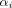
by the diagonal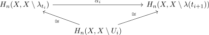
Then set
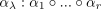
This defines a functor
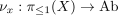
2. welldefined
2.1. independent of open ball
2.2. independent of decomposition
2.2.1. adding time stamps
Let
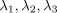
Then consider the open balls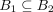
where wlog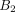
is given for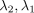
This results in a commutative diagram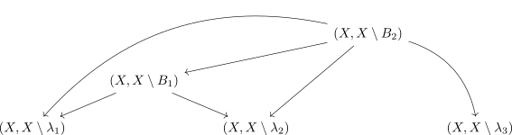
As taking inverses for is compatible with the diagram (cf. diagram and inverting morphisms)
we conclude that this is independent of adding time stamps.
2.2.2. comparing open covers
Suppose  is a path and
is a path and
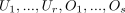
be open charts. Then by ordering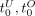
and taking the intersection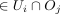
for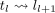
Therefore it suffices to show that the induced map is the same for
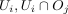
. Then it follows by reasons of symmetry that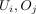
induce the same morphism.Let be the open balls. Then taking the intersection
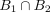
and restricting to the connected component containing the path
containing the path 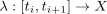
results in the commutative diagram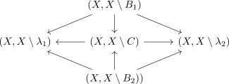
2.3. independent of homotopy
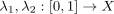
choose a homotopy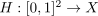
. Using the statement about open covering of the disk induces closed decomposition by repeating over the squares it suffices to show that two homotopic paths with same start- and endpoint inside a chart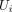
induce the same map. This holds by definition